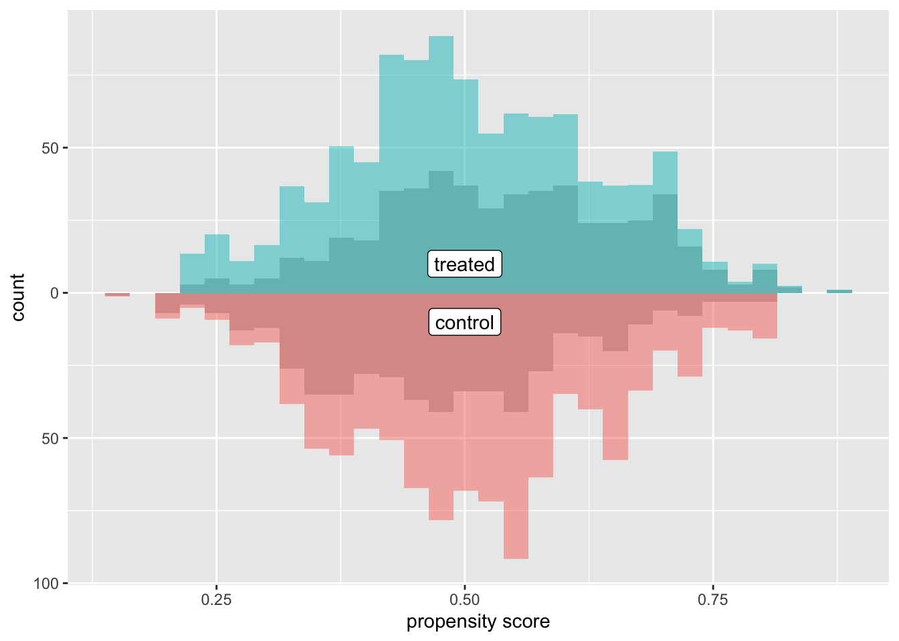
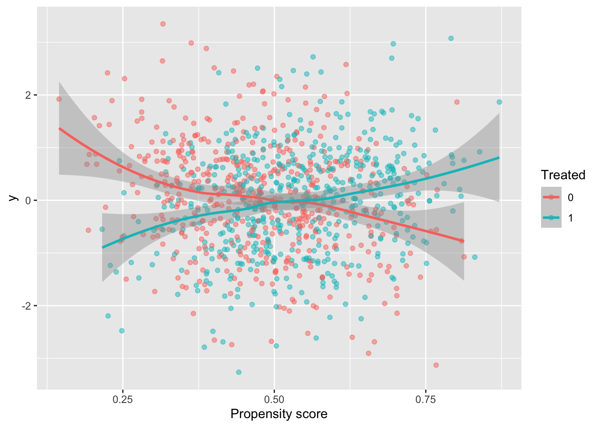

library(tidyverse)
library(propensity)
library(halfmoon)
library(MatchIt)Here we are going to look at several diagnostic plots that are helpful when attempting to answer a causal question. They can be used to visualize the target population, balance, and treatment effect heterogeneity.
Setup
I’ve simulated data to demonstrate the utility of the various plots. In each simulation, we have four pre-treatment variables: var1, var2, var3, and var4, a treatment, t, and an outcome y. I have also fit a propensity score model for each and calculated ATE, ATT, and overlap weights (unsure what these are? Check out this post on propensity score weighting). I will also create three propensity score matched cohorts, each with a different caliper.
I use the following packages:
For brevity I’ve hidden the simulation code, but if you would like to see it to reproduce the analyses yourself, just click the Code toggle.
Code
set.seed(8)
n <- 1000
## Main Data ----
var1 <- rnorm(n, sd = 0.25)
var2 <- rnorm(n, sd = 0.25)
var3 <- rnorm(n, sd = 0.25)
var4 <- rnorm(n, sd = 0.25)
e_x <- 1 / (1 + exp(-(var1 + var2 + var3 + var4)))
t <- rbinom(n, 1, e_x)
y1 <- 0.5 * (var1 + var2 + var3 + var4) + rnorm(n)
y0 <- - 0.5 * (var1 + var2 + var3 + var4) + rnorm(n)
y_obs <- t * y1 + (1 - t) * y0
data <- data.frame(
y = y_obs,
t = factor(t),
var1,
var2,
var3,
var4
)
data <- data |>
mutate(p = glm(t ~ var1 + var2 + var3 + var4, data = data, family = binomial) |>
predict(type = "response"),
w_ate = wt_ate(p, t, .treated = 1),
w_ato = wt_ato(p, t, .treated = 1),
w_att = wt_att(p, t, .treated = 1)
)
match_1 <- matchit(t ~ var1 + var2 + var3 + var4, data = data, caliper = 0.1)
match_2 <- matchit(t ~ var1 + var2 + var3 + var4, data = data, caliper = 0.01)
match_3 <- matchit(t ~ var1 + var2 + var3 + var4, data = data, caliper = 0.001)
matches <- bind_matches(data, match_1, match_2, match_3)
## Non-linear data ----
e_x <- 1 / (1 + exp(- (var1 + var2 + var3 + 2 * I(var4 < -0.5) + 6 * I(var4 > 0.5))))
t <- rbinom(n, 1, e_x)
y1 <- 1 + var2 + var2 + var3 + var4
y0 <- var1 + var2 + var3 + var4
y_obs <- t * y1 + (1 - t) * y0
data_nonlinear <- data.frame(
y = y_obs,
t = factor(t),
var1,
var2,
var3,
var4
)
data_nonlinear <- data_nonlinear |>
mutate(p = glm(t ~ var1 + var2 + var3 + var4, data = data_nonlinear, family = binomial) |>
predict(type = "response"),
w_ate = wt_ate(p, t, .treated = 1),
w_ato = wt_ato(p, t, .treated = 1),
w_att = wt_att(p, t, .treated = 1)
)
## Positivity violation data ----
set.seed(2186)
var4 <- rgamma(n, 1, 1.5)
e_x <- 1 / (1 + exp(- (var1 + var2 + var3 + var4 + 0.2 * var4^2 + 0.001 * var4^3)))
t <- rbinom(n, 1, e_x)
data_positivity <- data.frame(
t = factor(t),
var1,
var2,
var3,
var4
)
data_positivity <- data_positivity |>
mutate(p = glm(t ~ var1 + var2 + var3 + poly(var4, 3), data = data_positivity, family = binomial) |>
predict(type = "response"),
w_ate = wt_ate(p, t, .treated = 1),
w_ato = wt_ato(p, t, .treated = 1),
w_att = wt_att(p, t, .treated = 1)
) Target Population
Targeting different causal estimands will yield different target populations (for a longer discussion of target populations see this post and check out this awesome pre-print by Noah Griefer and Liz Stuart. For example, if you are interested in answering a question with the treated group in mind, an estimand that estimates the average treatment effect among the treated (ATT), will be appropriate. Targeting this estimand will lead to selecting unexposed individuals who match the characterstics of the treated population (whether via matching to these individuals or upweighting them in the sample). Mirrored histograms can be a nice way to visualize the distribution of your target population after incorporating the propensity score when either matching or weighting are used. These basic plots are simply histograms of the propensity score, stratified by exposure. “Mirroring” these histograms above and below the x-axis, can make it easier to compare regions of overlap.
What am I looking for?
- Overlap: What is the degree of overlap between the exposure groups?
- Positivity violations: Does everyone have a non-zero probability of each level of exposure?
- Extreme weights: Are there any extreme weights that could induce finite sample bias / extreme variance?
Let’s take a look at an example. We can use the halfmoon package to create these.
The cobalt package is another excellent tool that can create many of these plots in R.
Below is the basic implementation of this mirrored histogram prior to incorporating the propensity score. On the top half of the visualization, we see the distribution of the propensity score in the treated group (blue); the bottom half displays the distribution among the controls (orange). Looking at this plot, I see good overlap (i.e. the two distributions overlap), and I do not see evidence of positivity violations.
ggplot(data, aes(p, fill = t, group = t)) +
geom_mirror_histogram(bins = 30) +
annotate("label", 0.5, -10, label = "control") +
annotate("label", 0.5, 10, label = "treated") +
scale_y_continuous(labels = abs) +
labs(x = "propensity score",
y = "count") +
theme(legend.position = "none")Now let’s incorporate the propensity score. First, let’s see what this plot looks like if our target population is the whole population, meaning we are interested in estimate the ATE. I have added the following line of code to the ggplot layers below: geom_mirror_histogram(bins = 30, aes(weight = w_ate), alpha = 0.5). Now, I can see the pseudo-population that is created after implementing the propensity score weight. Notice the shape of the distributions match between the two groups (this is what the ATE weight is trying to do!). Looking at the figure below, I also can conclude that there aren’t any extreme weights.
ggplot(data, aes(p, fill = t, group = t)) +
geom_mirror_histogram(bins = 30, fill = "grey") +
geom_mirror_histogram(bins = 30, aes(weight = w_ate), alpha = 0.5) +
annotate("label", 0.5, -10, label = "control") +
annotate("label", 0.5, 10, label = "treated") +
scale_y_continuous(labels = abs) +
labs(x = "propensity score",
fill = "treatment",
y = "count") +
theme(legend.position = "none")
These plots can be useful as a pedagogical tool to give a sense for how the different target estimands lead to different target populations. For example, let’s see what the pseudo-population looks like after using the ATT weight. Notice in the figure below, the “weighted” pseudo-population in the treated arm exactly overlaps with the actual distribution of the treated observations – this is exactly what an ATT weight does, everyone in the treated population receives a weight of 1. Now look at the bottom half of the figure – the distribution of the propensity scores in the control group now matches that of the treated – in the regions were there are fewer treated observations, the control observations are down-weighted (where the propensity score is lower) and in the regions where there are more treated observations the control observations are up-weighted (where the propensity score is higher).
ggplot(data, aes(p, fill = t, group = t)) +
geom_mirror_histogram(bins = 30, fill = "grey") +
geom_mirror_histogram(bins = 30, aes(weight = w_att), alpha = 0.5) +
annotate("label", 0.5, -10, label = "control") +
annotate("label", 0.5, 10, label = "treated") +
scale_y_continuous(labels = abs) +
labs(x = "propensity score",
fill = "treatment",
y = "count") +
theme(legend.position = "none")Finally, let’s see how an overlap (ATO) weight compares. Notice in the figure below all observations appear to be down-weighted – the overlap weights are bounded by 0 and 1 (which means they have nice variance properties! There is no risk of having an extreme weight!). Also notice the shape of the distribution – it matches between the two groups.
ggplot(data, aes(p, fill = t, group = t)) +
geom_mirror_histogram(bins = 30, fill = "grey") +
geom_mirror_histogram(bins = 30, aes(weight = w_ato), alpha = 0.5) +
annotate("label", 0.5, -10, label = "control") +
annotate("label", 0.5, 10, label = "treated") +
scale_y_continuous(labels = abs) +
labs(x = "propensity score",
fill = "treatment",
y = "count") +
theme(legend.position = "none")I like to compare the overlap weights to the distribution after matching with a caliper, as they are both use to estimate a similar estimand. Here, I have created three matched cohorts, each with an increasingly smaller caliper. We can think of matching as an extreme form of weighting, where the observation will receive a weight of 1 if they are in the cohort and 0 otherwise. Here, I have created a dataset called matches that has three columns with these indiciators match_1, match_2, and match_3 (you can see the code above by clicking the Code toggle in the Setup section).
Propensity score matching with a caliper means that you only consider matches within a pre-specified distance of each other. Smaller calipers will result in fewer matches.
Code
ggplot(matches, aes(p, fill = t, group = t)) +
geom_mirror_histogram(bins = 30, fill = "grey") +
geom_mirror_histogram(bins = 30, aes(weight = match_1), alpha = 0.5) +
annotate("label", 0.5, -10, label = "control") +
annotate("label", 0.5, 10, label = "treated") +
scale_y_continuous(labels = abs) +
labs(x = "propensity score",
y = "count") +
theme(legend.position = "none")Code
ggplot(matches, aes(p, fill = t, group = t)) +
geom_mirror_histogram(bins = 30, fill = "grey") +
geom_mirror_histogram(bins = 30, aes(weight = match_2), alpha = 0.5) +
annotate("label", 0.5, -10, label = "control") +
annotate("label", 0.5, 10, label = "treated") +
scale_y_continuous(labels = abs) +
labs(x = "propensity score",
y = "count") +
theme(legend.position = "none")Code
ggplot(matches, aes(p, fill = t, group = t)) +
geom_mirror_histogram(bins = 30, fill = "grey") +
geom_mirror_histogram(bins = 30, aes(weight = match_3), alpha = 0.5) +
annotate("label", 0.5, -10, label = "control") +
annotate("label", 0.5, 10, label = "treated") +
scale_y_continuous(labels = abs) +
labs(x = "propensity score",
y = "count") +
theme(legend.position = "none")For demonstration purposes, let’s see what one of these plots looks like in a dataset that doesn’t have perfect overlap. Whoa! Look at that weight in the figure below. This is an example where we see a possible positivity violation (some observations of propensity scores very close to 1) and extreme weights (check out that control with a weight > 500!).
ggplot(data_positivity, aes(p, fill = t, group = t)) +
geom_mirror_histogram(bins = 30) +
geom_mirror_histogram(bins = 30, aes(weight = w_ate), alpha = 0.5) +
annotate("label", 0.6, -20, label = "control") +
annotate("label", 0.6, 20, label = "treated") +
scale_y_continuous(labels = abs) +
labs(x = "propensity score",
y = "count") +
theme(legend.position = "none")Balance visualization
Ok, once we’ve checked out the target population, we can see how balanced the exposure groups are after incorporating the propensity score.
What am I looking for?
- balance (in the mean) between treatment groups
- balance across the distribution (for continuous confounders)
Balance in the mean
A common way to look at balance is the standardized mean difference. This will tell us whether the (standardized) means are balanced between the treatment groups (we often target an absolute standardized mean difference less than 0.1 as a rule of thumb). We can use the tidy_smd function to calculate the standardized mean differences between the exposure groups in our example dataset. Let’s see how they compare across the matched datasets.
matches_smd <- tidy_smd(
matches,
var1:var4,
.group = t,
.wts = c(match_1, match_2, match_3)
)A nice way to visualize these is a Love Plot (named for Thomas Love, who was one of the first folks to use them). In the halfmoon package there is a geom_love that will help create this as a layer in a ggplot, or you can use the shorthand love_plot. Below we can see that all three matched sets achieve balance with respect to demonstrating standardized mean differences across all pre-treatment variables less than the rule of thumb (0.1). Each of the different “matches” denote a different caliper (from largest: match_1 to smallest: match_3). We see here that using a smaller caliper seems to help balance var2 at the expense of var4 and var1 compared to the larger calipers.
ggplot(matches_smd, aes(abs(smd), variable, group = method, color = method)) +
geom_love() +
labs(x = "Absolute standardized mean difference")Let’s look at another dataset. I have simulated data I am calling data_nonlinear. Let’s check out the Love Plot for this data. This time I will use our propensity score weights.
weighted_smd <- tidy_smd(
data_nonlinear,
var1:var4,
.group = t,
.wts = c(w_ate, w_att, w_ato)
)
ggplot(weighted_smd, aes(x = abs(smd), y = variable, group = method, color = method)) +
geom_love() +
labs(x = "Absolute standardized mean difference")
Great! Looks like any of our weighting choices will achieve balance on the mean. Check out the green line (the overlap weights) – the standardized mean differences are exactly 0! This is a feature of this weight, if the propensity score is fit using logistic regression, any variables included in the model will be perfectly balanced on the mean – COOL! BUT as you may have guessed by the name of this dataset, the mean does not tell the whole story. These variables are continuous, so being balanced on the mean does not guarantee that the whole distribution is balanced. To examine the distribution of a variable across treatment groups, we can use an empirical cumulative distribution plot.
Balance across the distribution
The geom_ecdf function in the halfmoon package allows for you to visualize weighted empirical CDFs. Let’s first look at the unweighted eCDF for var4. We are going to plot the range of var4 values on the x-axis and the proportion of var4 values that are less than the given x-value on the y-axis (the empirical CDF), stratified by treatment. Looking at the figure below, we see gaps between the lines (meaning the two lines to not overlap, implying that the distributions differ).
ggplot(data_nonlinear, aes(x = var4, group = t, color = t)) +
geom_ecdf() +
labs(y = "Proportion <= x") +
theme(legend.position = "none")Now we can compare this to the weighted eCDF to see if the propensity score weighting improves the balance – I’ll use the overlap weights for demonstration purposes. Hmm. We can see in the plot below that the lines cross (they are balanced on the mean, we knew that from the Love Plot), but there are still pretty large gaps across other portions of the distribution. This suggests that there are some non-linear effects that the propensity score is failing to capture.
ggplot(data_nonlinear, aes(x = var4, group = t, color = t)) +
geom_ecdf(aes(weights = w_ato)) +
labs(y = "Proportion <= x") +
theme(legend.position = "none")
Let’s try to refit our propensity score model with a spline on the var4 variable, and then recreate our plot.
data_nonlinear <- data_nonlinear |>
mutate(p = glm(t == 1 ~ var1 + var2 + var3 + splines::ns(var4, 4),
data = data_nonlinear) |>
predict(type = "response"),
w_ato = wt_ato(p, t, .treated = 1))
ggplot(data_nonlinear, aes(x = var4, group = t, color = t)) +
geom_ecdf(aes(weights = w_ato)) +
labs(y = "Proportion <= x") +
theme(legend.position = "none")Much better!
Heterogeneous treatment effect
Here is the last visual! This is a quick plot that can help explore possible treatment heterogeneity.
What am I looking for?
- Differences in the treatment effect across the covariate space
In this example dataset, the average treatment effect is 0. Let’s show that. There are lots of ways to estimate this, for example, we can use the ATE weights.
lm(y ~ t, data = data, weight = w_ate)
Call:
lm(formula = y ~ t, data = data, weights = w_ate)
Coefficients:
(Intercept) t1
-0.02095 -0.05364 Awesome! Now let’s create a plot to see if this effect is constant across the covariate space. One way to summarize the “covariate space” is the propensity score! This simple plot has the propensity score on the x-axis and the outcome on the y-axis. We then stratify by the treatment and look at a smoothed line in both groups.
ggplot(data, aes(x = p, y = y, color = t)) +
geom_point(alpha = 0.5) +
geom_smooth(method = "loess", formula = "y ~ x") +
labs(x = "Propensity score",
color = "Treated")
The lines cross! This indicates that there is treatment effect heterogeneity (in this particular case, when the propensity score is greater than 0.5, there is a positive treatment effect, and when less than 0.5 there is a negative treatment effect).
You can find a longer post about these plots here.
Just to see what it looks like when there is not a heterogeneous treatment effect, let’s check out the data_nonlinear dataset (where I simulated a constant effect). Notice below the lines don’t cross, the width between them is constant across the covariate space.
ggplot(data_nonlinear, aes(x = p, y = y, color = t)) +
geom_point(alpha = 0.5) +
geom_smooth(method = "loess", formula = "y ~ x", span = 50)Wrap up
So there you have it! Four visualizations to add to your tool kit when attempting to answer causal questions.
This post is cross-posted on Lucy’s blog, livefreeordichotomize.com